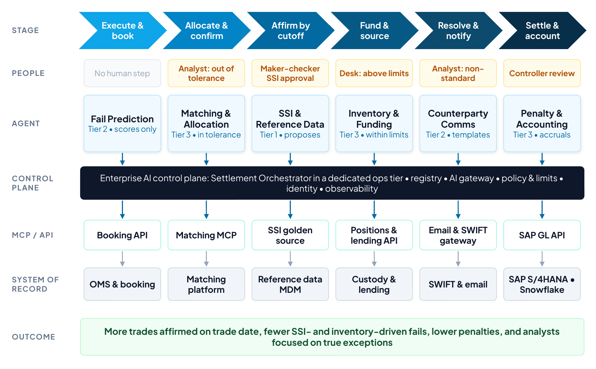
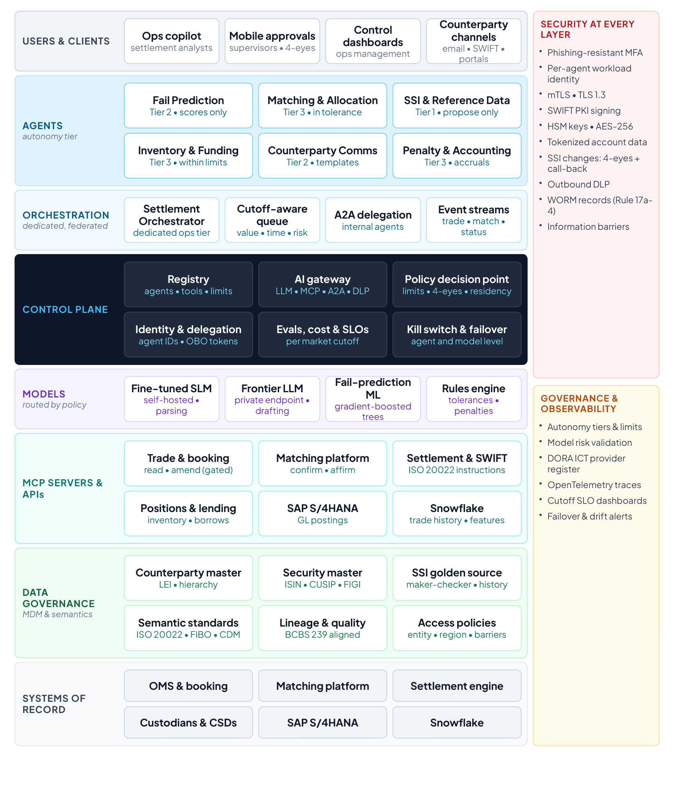
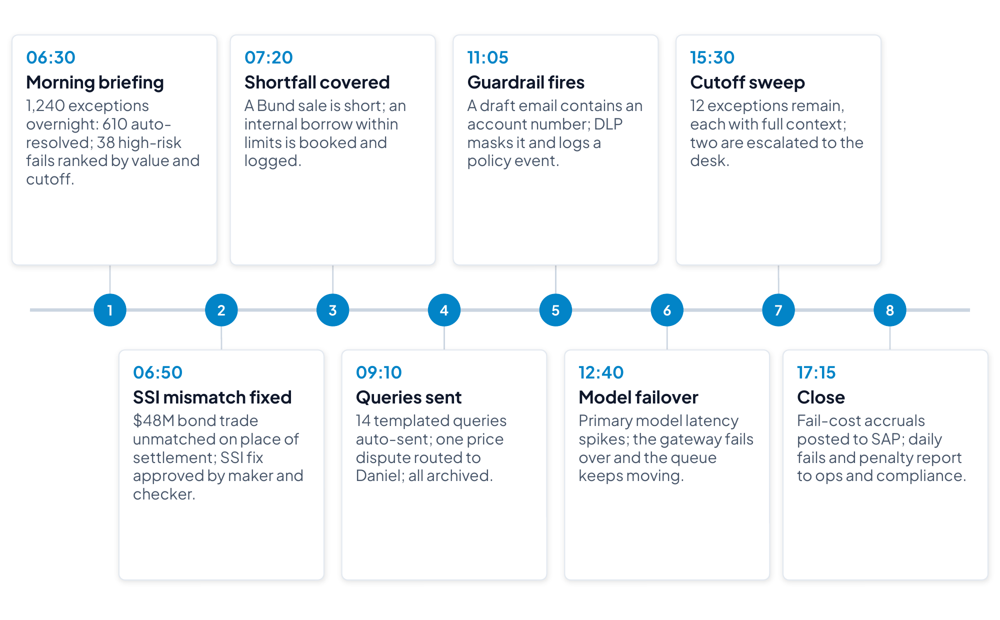
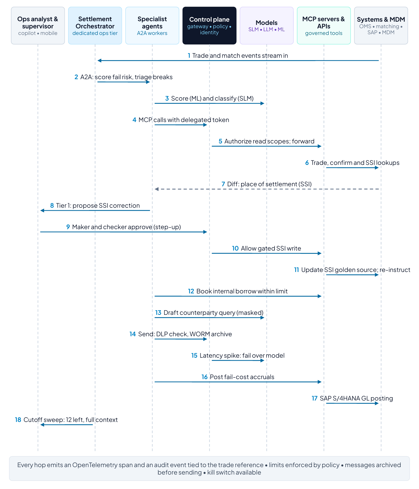
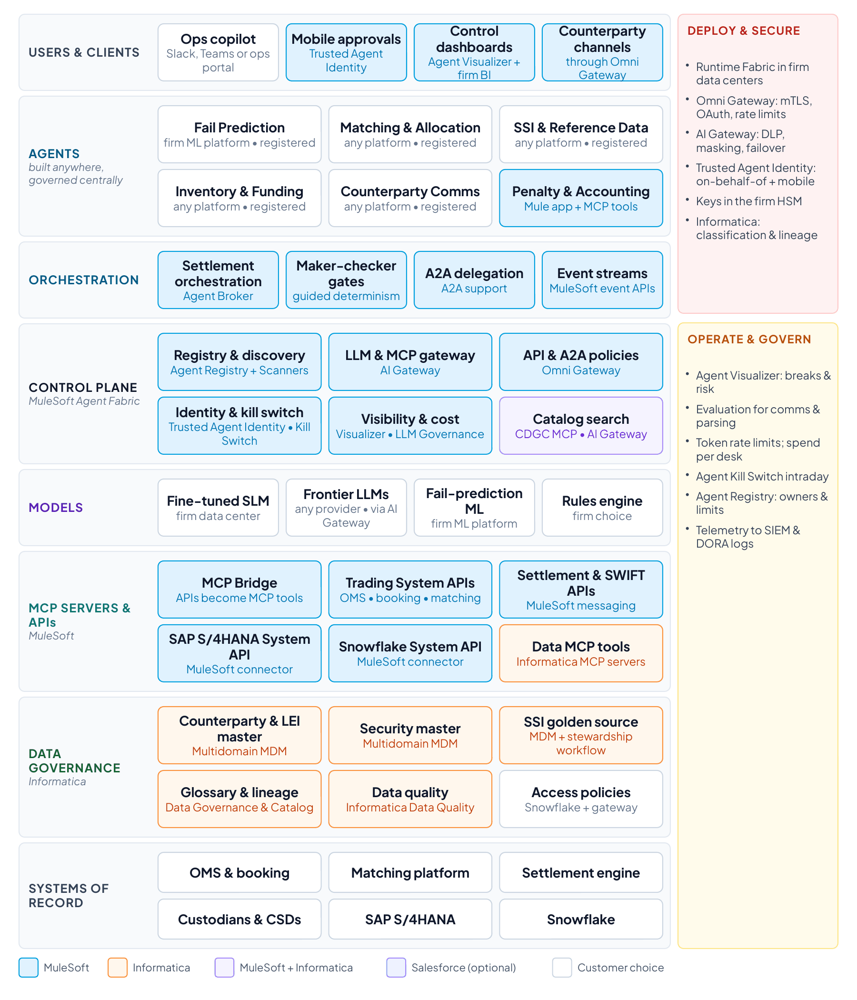

Section 12
Reference use case 2: Capital markets T+1 settlement exceptions
This reference use case applies the architecture to post-trade operations at a global broker-dealer: predicting, triaging and resolving settlement exceptions in a T+1 world. As in use case 1, the architecture is vendor-neutral except for the transactional platforms named (SAP S/4HANA for the general ledger and Snowflake for trade history and analytics); trading, matching and settlement platforms are described generically. The final subsection shows how MuleSoft and Informatica realize the design.
Overview
The US moved most broker-dealer securities trades, including equities and corporate bonds, to T+1 settlement on May 28, 2024, together with a new requirement for broker-dealers to complete allocations, confirmations and affirmations as soon as technologically practicable and no later than the end of trade date.95 The EU, the UK and Switzerland will move to T+1 together on October 11, 2027.96 T+1 compresses allocation, confirmation, affirmation, funding and exception handling into a single day, and failures are expensive: in 2024, participants paid on average €70.43 million a month in EU cash penalties for settlement fails on the T2S platform, and a 2025 industry survey found that 71% of respondents’ settlement fails in 2024 were caused by counterparty shorts and 21% by data issues such as incorrect or stale standing settlement instructions (SSIs).97
In most firms, exceptions are still worked by analysts who move between order and booking systems, matching platforms, settlement systems, custodian portals, SWIFT messages and email. This use case adds an agentic layer on top of those systems: agents predict likely fails, fix standard breaks, prepare non-standard ones for people and keep a complete audit trail. People keep authority over anything that moves money, changes settlement instructions or commits the firm to a counterparty.
- Trigger: trade booking on trade date (T) and every later lifecycle event: allocation, confirmation, affirmation and settlement status.
- End state: trade settled, or a failed trade resolved with costs accrued, penalties recorded and counterparties informed.
- Users: settlement operations analysts and supervisors, the trading desk for inventory issues, treasury, finance and compliance.
- Out of scope: trade execution and pre-trade compliance.

Business case and expected outcomes
Illustrative for a broker-dealer settling 50,000 trades a day with a 3% exception rate (about 1,500 exceptions a day) and an average handling time of 18 minutes (about 450 analyst hours a day). Replace with the firm’s baseline.
| Value lever | How the solution delivers it | Illustrative annual value |
|---|---|---|
| Analyst capacity | Agents close about 40% of exceptions and halve handling time for the rest | Daily effort falls from about 450 to 135 hours; 315 hours × 250 days × $125 ≈ $9.8M |
| Fewer fails and penalties | Fail prediction plus pre-emptive SSI and inventory fixes cut the fail rate by about a third | Model on the firm’s penalty and fail-cost history; EU penalties on T2S averaged about €70M a month in 202497 |
| Funding and borrow costs | Earlier visibility of shortfalls allows cheaper internal borrows and planned funding | Firm-specific; typically material for fixed income and cross-border flows |
| Regulatory and client outcomes | Higher same-day affirmation, complete audit trails and faster answers to clients | Risk reduction; readiness for T+1 in Europe in October 2027 |
- T+1 readiness for the October 2027 European go-live, with evidence of control for supervisors.
- Lower cost per trade as volumes grow, without growing the operations team at the same rate.
- Analysts focused on genuine exceptions, with complete context instead of swivel-chair research.
- Fewer client and counterparty escalations, and faster answers when they happen.
Key performance indicators
Baselines below are illustrative and should be measured during discovery.
| KPI | Definition | Baseline (illustrative) | Target (12 months) |
|---|---|---|---|
| Same-day affirmation | Eligible trades affirmed on trade date by the cutoff | 88% | 97% or higher |
| Settlement fail rate | Failed settlements as a share of instructed settlements | 2.0% | 1.3% |
| Auto-resolved exceptions | Exceptions closed by agents without human handling | 0% | 40% |
| Average handling time | Minutes per human-handled exception | 18 | 9 |
| SSI-related fails | Share of fails caused by missing or stale SSIs | About 21% (industry survey) | Below 7% |
| Net CSDR penalties | Penalties paid minus received, per month | Firm baseline | Down 30% |
| Fail-prediction precision | Share of predicted fails that would have failed | Not measured | 70% or higher |
| Time to contain | Minutes from alert to kill switch or credential revocation | Not measured | Under 5 |
| Communications retained | Agent-sent messages archived to WORM storage before sending | Not measured | 100% |
Solution architecture
Figure 14 shows the architecture against the same layers as the reference architecture, with the cross-cutting security, governance and observability controls on the right.

Clients and channels
Analysts work in an operations copilot inside their operations workspace or collaboration tool; supervisors approve on mobile with step-up authentication; operations management uses control dashboards. Outbound channels to counterparties (email, SWIFT and counterparty portals) are reachable only through the gateway, so every message is checked and archived.
Agents and autonomy tiers
| Agent | Responsibility | MCP tools | Tier | Human role |
|---|---|---|---|---|
| Settlement Orchestrator | Ranks exceptions by value, time to cutoff and counterparty risk; delegates over A2A; tracks cutoffs | Exception queue; registry | Tier 2 | Supervisors see the queue |
| Fail Prediction | Scores each trade’s probability of failing from history, counterparty behavior and inventory | Snowflake features (read) | Tier 2, scores only | None |
| Matching & Allocation | Resolves allocation and confirmation breaks within tolerances | Booking and matching-platform tools | Tier 3 in tolerance | Analyst beyond tolerance |
| SSI & Reference Data | Validates SSIs against the golden source; proposes corrections | SSI master (MDM); published counterparty SSIs | Tier 1 | Maker-checker with call-back |
| Inventory & Funding | Detects securities and cash shortfalls; proposes borrows and funding | Positions, lending and treasury tools | Tier 3 within limits | Desk approves above limits |
| Counterparty Comms | Drafts and sends queries and chasers; tracks responses | Email and SWIFT gateway; contacts | Tier 2, templates | Analyst for non-standard |
| Penalty & Accounting | Computes penalties and fail costs; posts accruals; prepares reports | Penalty data; SAP S/4HANA GL tools | Tier 3 | Controller review |
Orchestration model selected
The firm runs a dedicated orchestration tier for settlement operations, federated under the enterprise control plane. Settlement is latency-sensitive and cutoff-driven, runs in a tightly controlled operations domain and needs every action traceable, so the orchestrator and its agents run in a dedicated tier close to the trading and settlement systems, while identity, policy, registry, audit and cost remain centrally governed. Orchestration is event-driven (trade, matching and settlement-status events) with a supervisor pattern over A2A27 and deterministic workflows for regulated actions: SSI changes, payments and borrows above limits always follow maker-checker rules.
Models and routing
- Fine-tuned small language model: self-hosted; classifies exceptions and parses SWIFT and ISO 20022 messages and emails. It handles most of the volume at low latency and cost.
- Frontier model: on a private endpoint with zero data retention; drafts non-standard counterparty messages and summarizes complex breaks. A second provider is configured for failover, which also supports DORA expectations on ICT third-party risk.98
- Fail-prediction model: conventional machine learning (for example gradient-boosted trees) trained on settlement history in Snowflake. It is not an LLM, and its features and drift are monitored under model risk management.
- Rules engine: applies matching tolerances and penalty calculations deterministically.
- Routing policy: client and trade data stay on private models unless masked; EU desks’ data stays in EU regions; each step has a latency budget.
Control plane and policy
The control plane components match use case 1, with limits and maker-checker rules added to the policy set:
- SSI changes require two approvers, a verified source and a call-back record; agents can propose but never apply them. Each approval is bound to the exact change and expires before the settlement cutoff.
- Agents may book internal borrows up to a notional limit per trade and per day; above that, the desk must approve. The daily limit is enforced across agents and sessions, so many small borrows cannot add up past it.
- Outbound messages pass data-loss-prevention checks; account numbers and client identifiers are masked unless the channel is authenticated SWIFT.
- Every agent-sent communication is archived to write-once storage before it is sent.
MCP servers, APIs and systems of record
Trade and booking APIs; the matching and confirmation platform; the settlement engine and SWIFT and ISO 20022 messaging; custodian and CSD status feeds; positions, securities-lending and treasury APIs; SAP S/4HANA for general-ledger postings; and Snowflake for trade history and model features. Streaming events feed the orchestrator, and MCP tools give agents narrowly scoped read and write actions.
Data governance: MDM and semantics
About a fifth of fails trace back to data, much of it standing settlement instructions, so reference data is a control rather than a back-office afterthought:
- Counterparty and legal-entity master: golden records keyed by LEI with parent-child hierarchies, so exposure, SSIs and communications roll up correctly.
- Instrument (security) master: one record per security with ISIN, CUSIP and FIGI cross-references, settlement conventions and corporate-action status.
- SSI golden source: SSIs per counterparty, market and asset class with effective dates, a maker-checker workflow and a full change history. The EU and UK T+1 programs are setting market standards for how SSIs are managed and exchanged.99
- Account and book master: which legal entity, book and custody account each trade belongs to.
For semantics, the firm aligns its glossary and data contracts to industry standards: ISO 20022 for securities and payment messages,100 FIBO for business concepts101 and the Common Domain Model for trade lifecycle events.102 Agents, reports and regulators then share one vocabulary. Lineage and data-quality controls follow the BCBS 239 principles for risk data aggregation and reporting.103
Security at every level
The same zero-trust baseline applies as in use case 1,90 with controls specific to markets infrastructure:
| Layer | Controls |
|---|---|
| Users | Single sign-on with phishing-resistant MFA; step-up authentication for approvals; entitlements by desk, legal entity and region |
| Agents | Per-instance workload identity91; notional limits per agent; autonomy tiers; kill switch; agents cannot approve their own proposals |
| A2A | Signed agent cards; mTLS and OAuth on every call;27 on-behalf-of delegation92; A2A kept internal until counterparties support authenticated agent-to-agent exchange |
| MCP | OAuth-protected MCP servers; per-tool scopes; schema validation;26 as firm practice, separate read and write tools, an approval token for SSI and payment write tools, and pinned tool definitions |
| APIs and messaging | mTLS to trading and settlement systems; SWIFT PKI signing for instructions; replay protection and idempotency keys; rate limits |
| Models | Private endpoints; zero data retention; masking of client and account data; prompt-injection screening of inbound emails and messages, which are treated as untrusted input93 |
| Data at rest | AES-256 with keys in HSMs; tokenized account numbers; Snowflake row-access and masking policies by legal entity and region; write-once (WORM) retention for communications, one of the two storage options SEC Rule 17a-4 allows104 |
| Data in motion | TLS 1.3 and mTLS; private connectivity; hybrid post-quantum key exchange at gateways as vendors support it |
| Information barriers | Operations agents cannot reach research or deal-team data; entitlements follow the firm’s barrier policy |
| Fraud controls | SSI changes and payment redirections screened for anomalies, with call-back verification before approval |
Governance and observability
Operations risk owns the autonomy tiers and limits; model risk management validates the fail-prediction model and the small language model; the DORA register records model and platform providers as ICT third parties.98 Dashboards show cutoff SLOs by market, exceptions by cause, auto-resolution rate, penalties accrued, policy blocks, model latency and failover events, all built from OpenTelemetry traces94 tied to a trade reference.
A day in the life: Daniel, settlement operations analyst
Daniel Okafor works in the firm’s EMEA settlement operations team. The timeline follows an illustrative day (Figure 15).

Daniel starts at 06:30. His copilot’s briefing says 1,240 exceptions arrived overnight; agents have already closed 610 of them (standard matching breaks and SSI enrichments from verified sources), and 38 trades are flagged as likely fails, ranked by value and time to cutoff. At 06:50 he opens the top item: a $48 million corporate-bond trade unmatched on place of settlement. The SSI agent has found that the counterparty published updated instructions the previous afternoon and proposes the correction. Daniel approves as maker, his supervisor approves as checker on mobile with step-up authentication, and the settlement system re-instructs. At 07:20 the inventory agent spots that a sale of German Bunds is short and books an internal borrow within its limit.
By 09:10 the communications agent has sent 14 templated queries and routed one price dispute to Daniel, who rewrites the message himself. At 11:05 the gateway masks an account number that a draft email should not contain and shows Daniel the policy event. At 12:40 the primary model’s latency spikes; the gateway fails over to the secondary provider, and the only trace is on the operations dashboard. The 15:30 cutoff sweep leaves 12 exceptions, each with its full history, and Daniel escalates two to the trading desk. At 17:15 the penalty and accounting agent posts fail-cost accruals to SAP S/4HANA and publishes the daily fails and penalty report to operations and compliance.
How the components work together
Figure 16 traces the day through the architecture; the table explains what each component did and which controls applied.

| Time | What happens | Components and protocols | Controls applied |
|---|---|---|---|
| 06:30 | Overnight exceptions triaged | Event streams reach the Settlement Orchestrator; Fail Prediction scores trades from Snowflake features; the SLM classifies breaks; tasks go to specialist agents over A2A | Read-only scopes; routing to private models; traces per trade reference |
| 06:50 | SSI mismatch fixed | Matching agent finds the difference through matching-platform tools; SSI agent checks the SSI golden source (MDM MCP) and the published counterparty SSI; proposal goes to Daniel | Tier 1: propose only; maker-checker with step-up MFA; call-back record; MDM change history |
| 07:20 | Shortfall covered | Inventory & Funding agent uses positions and lending tools to book an internal borrow | Tier 3 within notional limits enforced by the policy decision point |
| 09:10 | Counterparty queries | Comms agent drafts with the frontier model on masked data; templated messages auto-sent through the email and SWIFT gateway | Outbound DLP; WORM archive before sending; non-standard messages need analyst approval |
| 11:05 | Guardrail fires | AI gateway data-loss-prevention policy detects an account number in a draft | Masking; policy event logged and shown to Daniel |
| 12:40 | Model failover | AI gateway detects a latency breach on the primary provider and routes to the secondary | Failover policy; event recorded for DORA incident and third-party reporting |
| 15:30 | Cutoff sweep | Orchestrator re-ranks by time to cutoff and hands remaining exceptions to people with evidence | SLO dashboards; full trace per exception |
| 17:15 | Close | Penalty & Accounting agent posts accruals through SAP S/4HANA GL tools; report built from Snowflake | Tier 3 with controller review; idempotent postings; lineage to source trades |
Realizing the use case with MuleSoft and Informatica
As in use case 1, MuleSoft Agent Fabric provides the control plane and the governed paths into the firm’s systems, and Informatica provides the data foundation, while the firm keeps its trading, matching and settlement platforms, its models and its agent frameworks (Figure 17).
| Reference component | MuleSoft or Informatica capability | Role in this use case |
|---|---|---|
| Registry | Agent Registry and Agent Scanners (MuleSoft Agent Fabric) | Registers in-house operations agents and agents embedded in vendor platforms, with owners and limits21 |
| Orchestration | Agent Broker with guided determinism (MuleSoft Agent Fabric) | Event-driven routing with maker-checker gates for SSIs, payments and large borrows21 |
| Events and messaging | Event-driven APIs and messaging connectivity (MuleSoft) | Streams trade, matching and settlement events; connects SWIFT and ISO 20022 flows and custodian feeds (confirm connector coverage for each venue) |
| AI gateway | AI Gateway; Omni Gateway (MuleSoft) | Model routing and failover, data-loss-prevention and masking policies, token limits, mTLS and OAuth21,78 |
| Agent identity | Trusted Agent Identity (MuleSoft Agent Fabric) | On-behalf-of actions with mobile approval for SSI changes and limit breaches;21 custom Omni Gateway policies bind each approval to the executed call and hold the daily borrow limit across sessions78 |
| Operate and control | Agent Kill Switch, Agent Visualizer, AI cost controls (MuleSoft Agent Fabric) | Stop an agent intraday; trace breaks; attribute AI spend by desk; communications and classifications are tested before release with the firm’s evaluation tool21 |
| MCP servers and APIs | MCP Bridge; connectors for SAP S/4HANA and Snowflake; System APIs for OMS, matching and settlement (MuleSoft) | Governed tools with read and write separation over existing trading and finance systems21 |
| Deployment | Runtime Fabric (MuleSoft) | Run gateways, MCP servers and agents in the firm’s data centers or VPC, close to trading systems, for latency and residency21 |
| Master data | Multidomain MDM (Informatica) | Counterparty and LEI, instrument and SSI golden records, which agents reach through governed APIs77 |
| Semantics and lineage | Data Governance and Catalog (Informatica) | Glossary aligned to ISO 20022, FIBO and CDM;100–102 lineage evidence for BCBS 239,103 both held in Informatica’s governance catalog77 |
| Data quality | Data quality (Informatica) | Validate SSIs and reference data at the point of entry and route exceptions to data stewards77 |

The pattern matches use case 1 by design: MuleSoft governs the agents and the paths they use, and Informatica governs the data they act on. The difference is operational. Here the orchestration tier is dedicated, deployment sits close to trading systems on Runtime Fabric, and the policies center on limits, maker-checker controls and records retention. Confirm connector coverage for each trading and settlement venue during planning.
Phased implementation: value at every milestone
As in use case 1, delivery follows the four phases of Section 8: each milestone widens the scope or raises the autonomy tier only after the previous one has proved its value and its controls.
| Milestone | What goes live | KPIs at the milestone | Value (illustrative) |
|---|---|---|---|
| Month 3 (phase 1) | One market and asset class, for example EU fixed income, about a fifth of exceptions. The fail-prediction agent scores trades and agents classify breaks and gather context at tier 2; analysts act as today. | Handling time down from 18 to about 13 minutes in scope; fail-prediction precision measured | About $0.8M a year (300 exceptions a day × 5 minutes × 250 days × $125 an hour) |
| Month 8 (phase 2) | All markets. The SSI golden source is fixed with maker-checker stewardship; agents propose fixes for one-click approval and draft counterparty messages from templates. | Handling time about 11 minutes; same-day affirmation rising | About $5.5M a year (175 analyst hours a day released) |
| Month 12 (phase 3) | Standard breaks, internal borrows and accruals automated at tier 3 within limits that hold across agents and sessions; SSI changes need maker-checker approvals bound to the change and expiring before the cutoff. For a program starting in late 2026, this lands before the European T+1 go-live on October 11, 2027. | All KPI targets met, including 40% of exceptions auto-resolved, 9 minutes of handling time and a 1.3% fail rate | About $9.8M a year in analyst capacity, plus fewer fails, lower penalties and cheaper funding |
| Month 24 (phase 4): all goals met | Run rate and KPI targets sustained; more asset classes and treasury funding added on the same controls, with European T+1 live. | All KPIs held at target | About $12M cumulative analyst capacity by month 24 |
Values are illustrative and before platform, model and change costs; the savings from fewer fails, lower penalties and cheaper funding come on top and depend on the firm’s own history. Automation that moves money or changes instructions waits for phase 3, when bound approvals and cross-session limits are in place; the earlier phases release analyst capacity in read-only and propose-only modes.